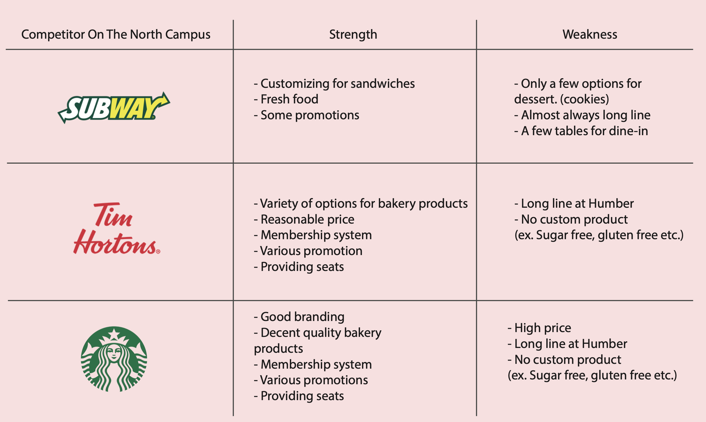
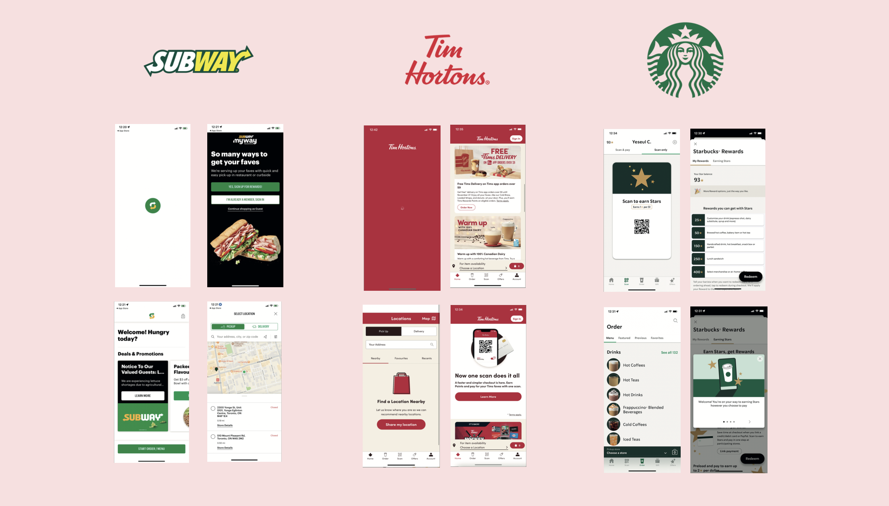
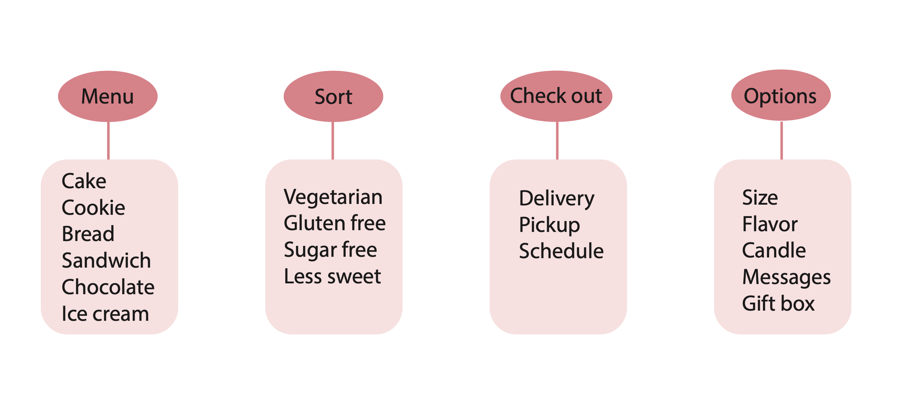
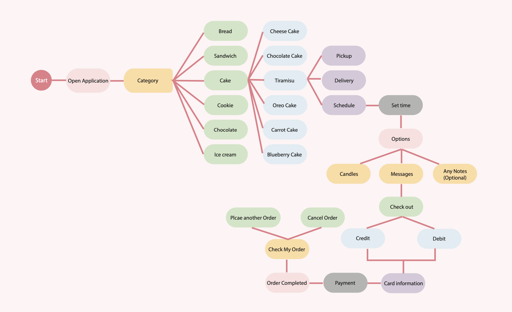
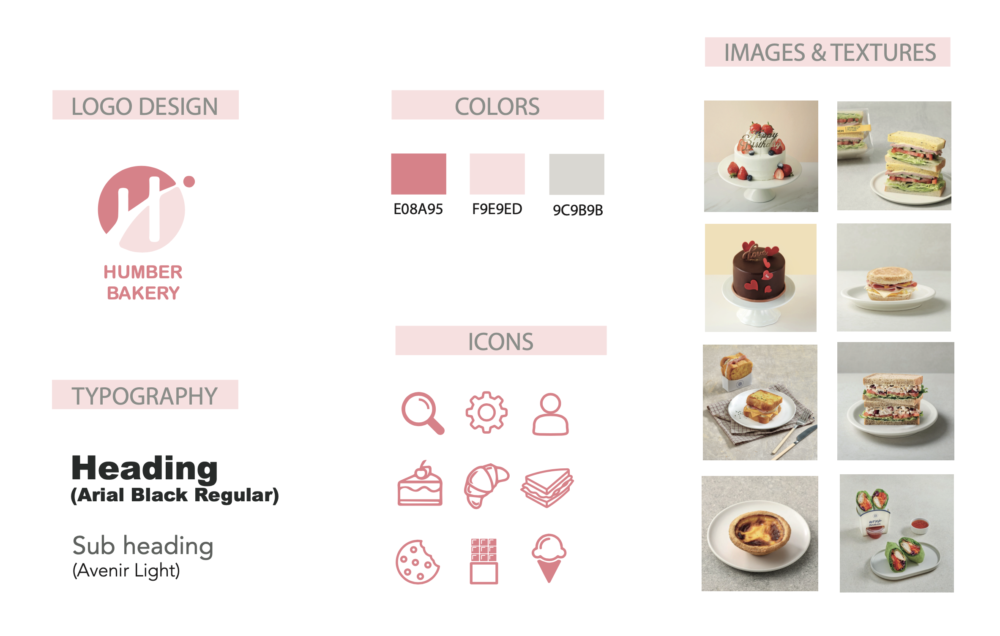
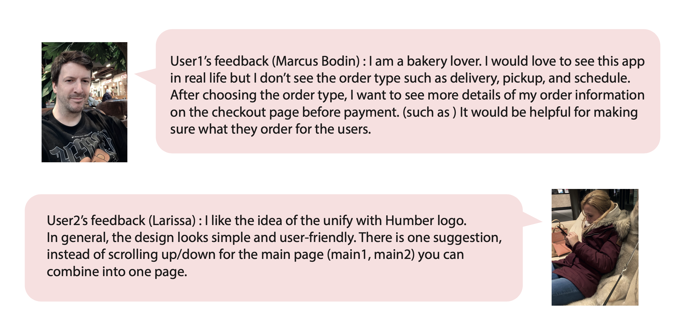
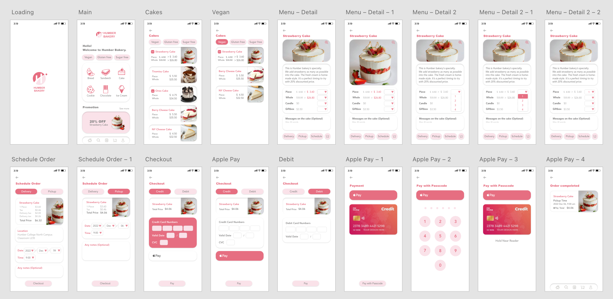

Bakery Mobile App Design
Project Overview
This project is about creating a new App for Humber Bakery.
I pretend there is a new bakery store at Humber College North Campus.
Since almost everybody has a smartphone these days,
This App is going to be a great approach for all potential customers.
I am going to focus on a user-friendly App for UX/UI design.
Furthermore, there will be a 3D AR video in the App
to get more interest from users.
Project Purpose
The personal purpose of this project is to improve my App design skills and to learn how to design a
user-friendly App.
If this project is not from a college assignment,
the purpose is to create a useful App for bakery customers by many times of user testing.
Design Process - Competitive Analysis
Design Process-Competitive Analysis
Design Process - Features of the App
Design Process - User Flow Diagram
Design Process - Style Tile
Design Process - User Testing / Design Review
Final deliverable
Technology Used
Adobe Illustrator / Adobe Photoshop / Adobe XD
Prototype